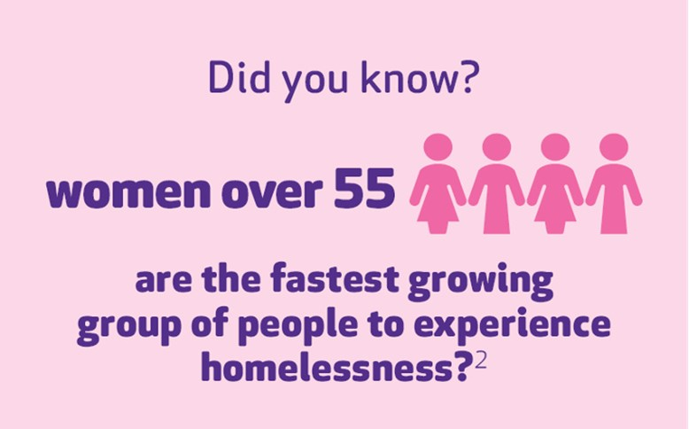
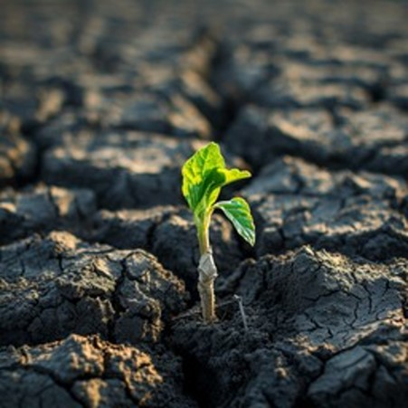
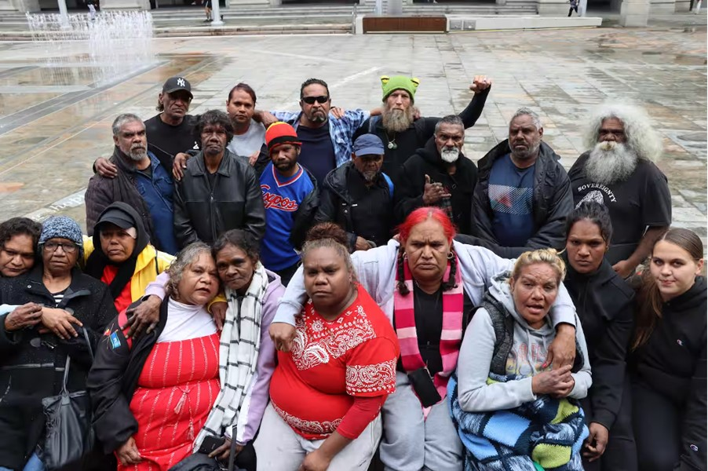

Disclaimer
The stories shared on this website depict the real-life experiences of women who have faced homelessness and related challenges. These narratives may contain themes of trauma, domestic violence, and mental health issues. If you or someone you know is struggling, please seek support from trusted adults, counsellors, or mental health professionals. Remember, help is available, and you are not alone.
Women Experiencing Homelessness: Stories of Resilience and Hope
Have you ever imagined what it’s like to have no place to call home?
For many women in Australia, homelessness is a reality. But beyond the struggle, there are incredible stories of resilience and hope. In this section, you'll meet women who have overcome unimaginable hardships and found ways to rebuild their lives.
Meet the Women
This story is about eleven brave Australian women, aged between 30 and 66, who’ve been through homelessness. They all had different journeys, some experienced it when they were as young as 8, others as late as 64.
How long could you go without a safe place to sleep?
Pathways to Homelessness
Each of these women faced unique challenges that eventually led them to homelessness. For many, escaping domestic violence meant leaving their homes behind. Others struggled with mental health issues, making it hard to keep their lives on track. Some lost their jobs, and in some cases, serious health problems prevented them from finding work again. Each woman has a unique story marked by tough events from her past. For example, Carla faced abuse as a child, while Sammy had to navigate life on the streets at a young age. As they grew older, many encountered violence in their relationships. Hannah, for instance, went through a terrifying situation that put her life at risk. Despite these challenges, these women sought help through psychologists, church support, and community services. Unfortunately, the assistance they received was often delayed or not enough to meet their needs. Transitioning into homelessness was a painful and overwhelming experience, whether it was an escape from abuse or an unexpected change in their lives.
The Trauma of Homelessness
Homelessness was described by the women as a "living nightmare". Many women felt trapped and overwhelmed by anxiety, depression, and isolation. Violet described being stuck in a “dark place,” while Helen and Anna fought to stay alive in the face of mental health challenges. On top of everything, they often encountered unfair judgment and unhelpful service providers, making their recovery even more difficult.
Finding Hope and Surviving
Despite all the pain and struggle, these women never lost hope. Violet reminded herself, "it will get worse, but it will eventually get better." Anna and Pinky found hope in small acts of support and connections with others. Pinky even used a photo of a partially illuminated plant to symbolise hope emerging from darkness. Every day brought new challenges, but they faced each one with determination, showing just how strong they were.
Finding Help
Navigating the support system was a huge challenge for many of these women. Rose felt alone and disconnected from the help she needed, while Pinky struggled even though she was familiar with the system. Many described feeling like the system was "set up to fail," with services weren’t enough, underfunded, unhelpful, and not built to truly understand the trauma they had endured. However, when they encountered people who genuinely cared, who understood their experiences, and took a compassionate, trauma-informed approach, it made all the difference. These moments of real connection gave them the strength to keep pushing forward.
Acknowledgments
The stories featured on this website are drawn from the research by Phipps, Dalton, Maxwell, and Cleary in their study, "A qualitative exploration of women’s resilience in the face of homelessness" (2019). Their study offers a profound insight into the experiences of women experiencing homelessness, and we are grateful for their contributions to understanding these critical issues. For more details about the study, please refer to: Phipps, M., Dalton, L., Maxwell, H., & Cleary, M. (2019). A qualitative exploration of women’s resilience in the face of homelessness. Journal of Community Psychology, 49(5), 1212–1227. https://doi.org/10.1002/jcop.22574
Key Takeaways
The stories of women experiencing homelessness highlight the different challenges they face and the resilience they demonstrate in the face of adversity. These narratives reveal how factors like domestic violence, mental health struggles, and lack of affordable housing can lead to homelessness. Importantly, they show us that support networks and community connections play a vital role in helping individuals navigate these hardships. By learning from these experiences, we can better understand the systemic issues contributing to homelessness. We also see the strength and determination of these women, which reminds us that, even in the darkest times, there is hope and the possibility for change. This reflection encourages us to empathise with those in difficult situations and to consider how we can support our communities in creating solutions for homelessness.
Learning Activity
After reading the stories, think about the following questions:
1.How do the stories of these women relate to the Sustainable Development Goals (SDGs), particularly Goal 1 (No Poverty) and Goal 5 (Gender Equality)?
2.What actions can we take to contribute to these goals in our own lives?
Aboriginal Experiences of Homelessness: Stories of Survival and Strength
The study by Browne-Yung, Ziersch, Baum, and Gallaher (2016) explores the challenging experiences of Australian Aboriginal peoples facing homelessness in urban areas. It not only highlights the severe difficulties of homelessness but also reveals the remarkable resilience and strength within these communities. This research helps us understand how systemic issues and cultural displacement affect their lives, offering a powerful perspective on their struggles and perseverance.
A Journey Through Loss
Brian's life took a painful turn after losing touch with his kids and battling alcoholism. At just 41, he found himself homeless. "I felt like a big piece of me was taken away. I feel helpless,” he shared. Despite his efforts to get public housing, he faced endless red tape. Brian's story highlights how homelessness impacts mental health and the urgent need for support systems that address both emotional and practical needs. Breaking Free from Abuse
Breaking Free from Abuse
Lara, a single mother, fled an abusive relationship, which led her to homelessness. Her bravery in leaving a dangerous situation shows just how strong she is. Despite her struggles, Lara is determined to create a safe and better life for her children. Her story is a powerful reminder of the strength found in the fight for safety and a brighter future
From Prison to Homelessness
Anthony's life has been a relentless cycle of imprisonment and homelessness. After losing his home while incarcerated, he faced a long struggle to find stable housing. "I waited 12 months to get out of gaol and another 12 months just to get housing," he shares. His journey shows how tough it is to rebuild a life after prison and highlights the barriers that make finding a home so difficult.
The Struggle for Home and Health
Luke's journey is a testament to the challenges faced by many families today. After moving back to Adelaide from New South Wales due to overcrowding, he found himself battling the odds to secure a stable home for his five children. "We moved back to be close to family, but finding work and a place to rent was more challenging than we anticipated," he explains. This struggle illustrates the harsh reality of affordable housing scarcity and its impact on family stability. Luke's experience also highlights the severe health toll of homelessness. "It’s more physical because you get down inside and you’re more prone to 24-hour bugs," he notes. His story reveals the complex interplay between housing, health, and the relentless fight for a better life.
Moving from Country to City
Yvonne has faced homelessness for two years after moving from the country to the city. She illustrates the struggles that come with urban living like inadequate housing and limited resources. Yvonne’s resilience in adapting to her new life highlights the ongoing fight for stability and support in unfamiliar environments.
Cultural and Physical Challenges
For eight years, Janet has experienced homelessness. She compares the cold, impersonal city with the comforting parks where she once found peace. " The parks are getting smaller," she laments, revealing how urban development pushes away the places that can provide a sense of belonging and safety.
Strength in Community
Paul, who has been homeless for four years, emphasises the importance of community bonds among those experiencing homelessness. "With my friends and that we usually just sit around and make sure that no one in the group is starving," he shares. His story highlights the strength found in communal support and the shared efforts to care for one another despite their hardships.
The Role of Community Services
Rose, who has been homeless for one year, values the role of community services as a meeting place for reconnecting with family and friends. "Yeah, we meet our families and friends up there at a few places," she says. Her story emphasises how these community spaces help maintain cultural and personal connections with loved ones, reminding us that even in tough times, we can lean on each other for support.
The Power of Support
Mary’s experience with homelessness shows how crucial support networks can be. "Chat with them, you know, yarn, just yarn… I've only got a couple of friends, they help me out," she explains. Her experience illustrates that even a small circle of friends can make a significant difference in managing the challenges of homelessness.
Acknowledgments
The stories featured on this website are informed by the research conducted by Browne-Yung, Ziersch, Baum, and Gallaher in their study, “When you sleep on a park bench, you sleep with your ears open and one eye open”: Australian Aboriginal peoples’ experiences of homelessness in an urban setting (2016). Their work provides valuable insights into the unique challenges and resilience of Aboriginal individuals experiencing homelessness. We extend our gratitude for their essential contribution to understanding these critical issues. For more details about the study, please refer to: Browne-Yung, K., Ziersch, A., Baum, F., & Gallaher, G. (2016). When you sleep on a park bench, you sleep with your ears open and one eye open: Australian Aboriginal peoples’ experiences of homelessness in an urban setting. Australian Aboriginal Studies, (2), 3–17. https://search-informit-org.ezproxy-b.deakin.edu.au/doi/10.3316/informit.520063305013217
Key Takeaways
These stories offer valuable insights into the various journeys that Aboriginal Australians face when experiencing homelessness. They highlight how systemic issues like lack of affordable housing, high incarceration rates, and substance abuse play significant roles in these challenges. Importantly, the stories also showcase how strong social networks and cultural ties can help individuals navigate through tough times. By understanding these experiences, we can appreciate the incredible resilience and strength of Aboriginal people as they confront homelessness.
Learning Activity:
After reading the stories, think about the following questions: 1. How do the experiences of Indigenous Australians facing homelessness relate to the Sustainable Development Goals (SDGs), particularly Goal 1 (No Poverty), Goal 10 (Reduced Inequalities), and Goal 16 (Peace, Justice, and Strong Institutions)?
2. What actions can we take to support these goals and promote equality and justice for Indigenous communities in our own lives?